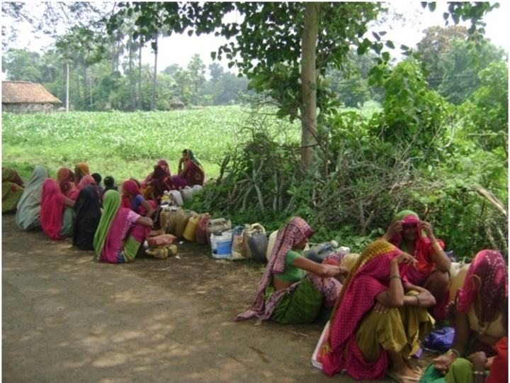

Synthesising the traditional anarchism of the Bhil Adivasis, the ancient Indian anarchism of the Charvaka, the Vedas and the Buddha, the modern anarchism of Proudhon, Bakunin, the late Marx of the period after the publication of Das Kapital when he came to acknowledge the validity of the anarchist path of the Russian People's Will Anarchists and Gandhi and the views of various schools of feminism, I have formulated my own school of thought of anarcho-environmentalism which is detailed below. This also draws on the philosophies of cynicism, green anarchism and naturalism. Twentieth century science has established the preponderance of chance in the evolution of the universe in general and life on earth in particular. Natural processes are probabilistic. Therefore, I have rejected the teleology and determinism that is the bane of most philosophies.
Caste oppression is a major problem in India, especially of the Dalits, and working as I do to try and mitigate it, I have also imbibed the emancipatory philosophy of Bhimrao Ambedkar, especially his seminal interpretation of Buddhism which he has termed as Navayana - The Buddhist concept of "Dukha" or sorrow has been reinterpreted by Ambedkar as the exploitation of the poor and the concept of "Nirvana" has been interpreted not as a metaphysical state or attainment of freedom, but as the achievement of a real society founded in peace and justice. Despite the immense difficulty of pursuing these anarcho-environmentalist programmes in a world that is heavily centralised in all respects, I have stuck to this task, which I have categorised as being Sisyphean, inspired by the philosophical reinterpretation of the Myth of Sisyphus by Albert Camus wherein he visualises Sisyphus as happy despite his absurd predicament of having to continuously roll a rock uphill only to see it roll down again. This comprehensive anarcho-environmentalist worldview encompassing these various schools of thought provides the philosophical foundation of the extensive work that I do on the ground to set up decentralised socio-economically equitable and environmentally sustainable communities.
Anarcho-environmentalism is a school of thought that emphasises the need for a pronounced environmentalist worldview within the larger anarchist worldview. It is different from naturalism in the sense that it is a modern philosophy that takes into account the devastation caused by industrial development which was not there at the time of the naturalists like Diogenes. It is also different from the environmentalism of John Ruskin because even though the latter did inveigh against industrialisation and its adverse environmental impact, it had a distinct christian evangelical character whereas anarcho-environmentalism is atheistic in character. That it is within the larger anarchist fold makes it different from the environmentalism of the liberals who do not question the vailidity of industrialisation but only seek to mitigate its adverse environmental impacts. It is also different from eco-anarchism or green anarchism because it stresses environmentalism that is the primacy of nature over humans and says that anarchism is the only form of human organisation that can ensure the primacy of nature. It is also different from the spontaneous animism and minimalism of the indigenous people in that it is a conscious philosophical formulation.

Nature is paramount and so humans must live in harmony with nature.
Human organisation must be in line with Anarchist principles of stateless communities based on direct
democracy and minimal individual property accumulation.
Women must be equal participants with men in all decision making and action
Unarmed Mass action is required on the ground to establish an anarcho-environmentalist civilisation.
Unarmed
because armed struggle is not possible by anarchist groups against the centralised and heavily armed
modern
state.
Anarcho-environmentalism emphasises the need for an environmentalist worldview within the larger anarchist worldview. It is different from the philosophy of the cynics because it is a modern philosophy that takes into account the devastation caused by industrial development which was not there at the time of the cynics like Diogenes. It is also different from the environmentalism of John Ruskin because even though he did inveigh against industrialisation and its adverse environmental impact, his opposition came from a Christian evangelical tradition whereas Anarcho-environmentalism is atheistic in character. That it is within the larger anarchist fold makes it different from Green liberalism which does not question the vailidity of industrialisation and centralisation but only seeks to mitigate their adverse environmental impacts. It is also different from eco-anarchism or green anarchism because it stresses the primacy of nature over humans and says that anarchism is the only form of human organisation that can ensure the primacy of nature.
The most well known form of Indian anarchism is Gandhism. However, there was a fundamental problem with Gandhism that it was funded by the nascent Indian capitalists and so its prescriptions remained on the periphery of the development path adopted by the independent Indian State. Anarcho-environmentalism on the other hand being in the classical anarchist mould clearly states that capitalism must be dispensed with. Anarchists are not necessarily free of patriarchal views as its founder Proudhon was highly patriarchal. In this respect too Anarcho-environmentalism is different because it espouses feminism. An important feature of this philosophy is its action oriented nature and extensive practice. Thus, in its action oriented character it is similar to Marxism which too according to Marx set out to change the world rather than just interpret it. However, unlike Marxism, which is teleological and utopian in nature, Anarcho-environmentalism does not posit any utopian future towards which action has to be oriented and instead concentrates on practical decentralised solutions to socio-economic and environmental problems.